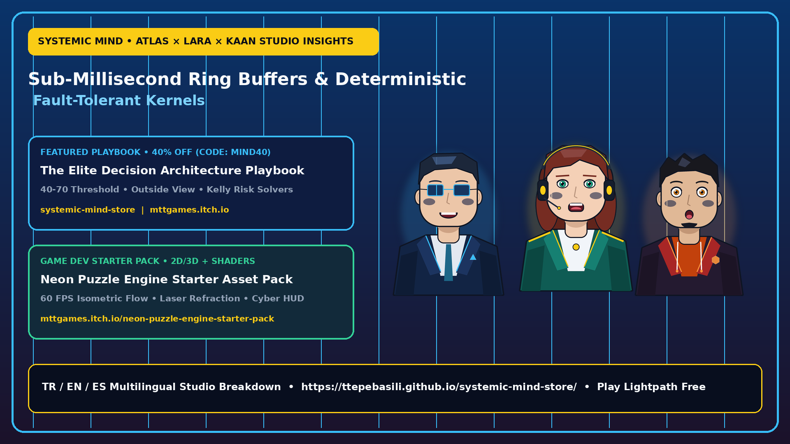

Sub-Millisecond Ring Buffers & Deterministic Fault-Tolerant Kernels — Análisis de Arquitectura con Atlas, Lara y Kaan

En este episodio de estudio, Atlas (Arquitecto Principal), Lara (Investigadora Curiosa) y Kaan (Especialista en Casos Límite) analizan a fondo Sub-Millisecond Ring Buffers & Deterministic Fault-Tolerant Kernels.
1. Cómo Eliminar Cuellos de Botella Invisibles en Memoria
Los promedios ocultan los picos del percentil noventa y nueve. Utilizar grupos de memoria preasignados y topologías deterministas garantiza sesenta cuadros por segundo estables y reduce drásticamente el gasto innecesario en la nube.
Studio Dialogue Highlights
- Atlas: Your infrastructure is architecturally bankrupt; every sub-millisecond ring buffer you deploy is currently suffering from cache-line bouncing and false sharing, effectively turning your high-performance kernel into a glorified, high-cost wait-state generator. Prove me wrong, or prepare for inevitable failure.
- Kaan: Harsh, Atlas. I mean, I love the aggression, but calling it bankrupt? Most devs think a lock-free circular buffer is the holy grail. Are you saying we're just rearranging deck chairs on a sinking Titanic of overhead?
- Lara: Wait, help me out. If sub-millisecond buffers are supposed to make things faster, how exactly do they become 'wait-state generators'? Is it the hardware architecture or just bad implementation?
- Atlas: It’s both. Every write operation in a poorly aligned ring buffer forces an L1 cache invalidation across cores. Your 'lock-free' code isn't lock-free; it's a contention nightmare hidden behind atomic instructions that keep CPU pipelines stalled waiting for memory coherency.
- Kaan: So, we're basically spamming the interconnect bus with 'Who has the truth?' messages. It’s like a middle-school argument where everyone is shouting, and no one is actually doing their homework.
- Lara: And the kernels! If the kernel is handling these interrupts while trying to be deterministic, doesn't that just collapse the whole promise of 'real-time' performance under heavy load?
2. Recursos Oficiales y Paquetes de Producción
Aplica estos marcos cuantitativos y motores 2D/3D listos para producción a través de nuestros paquetes verificados: